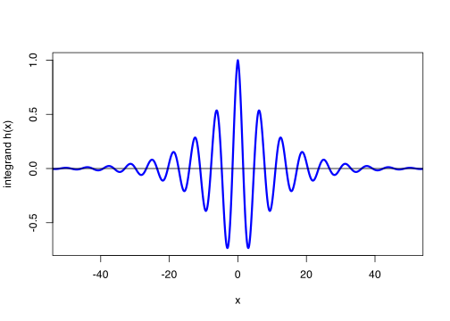

n <- 1e6
samples <- rnorm(n)
MCest <- mean(samples > 2)
MCest[1] 0.0229\[\newcommand{\Exg}{\operatorname{\mathbb{E}}} \newcommand{\Ex}{\mathbb{E}} \newcommand{\Ind}{\mathbb{I}} \newcommand{\Var}{\operatorname{Var}} \newcommand{\Cov}{\operatorname{Cov}} \newcommand{\Corr}{\operatorname{Corr}} \newcommand{\ee}{\mathrm{e}}\]
Quick recap: Last time we defined the Monte Carlo estimator for an expectation of a function of a random variable \(\theta = \Exg \phi(X)\) to be \[ \widehat{\theta}_n^{\mathrm{MC}} = \frac{1}{n} \big(\phi(X_1) + \phi(X_2) + \cdots + \phi(X_n) \big) = \frac{1}{n} \sum_{i=1}^n \phi(X_i) , \] where \(X_1, X_2, \dots, X_n\) are independent random samples from \(X\).
But what if we want to find a probability, rather than an expectation? What if we want \(\mathbb P(X = x)\) for some \(x\), or \(\mathbb P(X \geq a)\) for some \(a\), or, more generally, \(\mathbb P(X \in A)\) for some set \(A\)?
The key thing that will help us here is the indicator function. The indicator function simply tells us whether an outcome \(x\) is in a set \(A\) or not.
Definition 2.1 Let \(A\) be a set. Then the indicator function \(\Ind_A\) is defined by \[ \Ind_A(x) = \begin{cases} 1 & \text{if $x \in A$} \\ 0 & \text{if $x \notin A$.} \end{cases} \]
The set \(A\) could just be a single element \(A = \{y\}\). In that case \(\Ind_A(x)\) is 1 if \(x = y\) and 0 if \(x \neq y\). Or \(A\) could be a semi-infinite interval, like \(A = [a, \infty)\). In that case \(\Ind_A(x)\) is 1 if \(x \geq a\) and 0 if \(x < a\).
Why is this helpful? Well \(\Ind_A\) is a function, so let’s think about what the expectation \(\Exg \Ind_A(X)\) would be for some random variable \(X\). Since \(\Ind_A\) can only take two values, 0 and 1, we have \[ \begin{align*} \Exg \Ind_A(X) &= \sum_{y \in\{0,1\}} y\,\mathbb P\big( \Ind_A(X) = y \big) \\\ &= 0 \times \mathbb P\big( \Ind_A(X) = 0 \big) + 1 \times \mathbb P\big( \Ind_A(X) = 1 \big) \\ &= 0 \times \mathbb P(X \notin A) + 1 \times \mathbb P(X \in A) \\ &= \mathbb P(X \in A) . \end{align*} \] In line three, we used that \(\Ind_A(X) = 0\) if and only if \(X \notin A\), and that \(\Ind_A(X) = 1\) if and only if \(X \in A\).
So the expectation of an indicator function a set is the probability that \(X\) is in that set. This idea connects “expectations of functions” back to probabilities: if we want to find \(\mathbb P(X \in A)\) we can find the expectation of \(\Ind_A(X)\).
With this idea in hand, how do we estimate \(\theta = \mathbb P(X \in A)\) using the Monte Carlo method? We write \(\theta = \Exg\Ind_A(X)\). Then our Monte Carlo estimator is \[ \widehat{\theta}_n^{\mathrm{MC}} = \frac{1}{n} \sum_{i=1}^n \Ind_A(X_i) . \]
We remember that \(\Ind_A(X_i)\) is 1 if \(X_i \in A\) and 0 otherwise. So if we add up \(n\) of these, we count an extra +1 each time we have an \(X_i \in A\). So \(\sum_{i=1}^n \Ind_A(X_i)\) counts the total number of the \(X_i\) that are in \(A\). So the Monte Carlo estimator can be written as \[ \widehat{\theta}_n^{\mathrm{MC}} = \frac{\# \text{ of } X_i \text{ that are in $A$}}{n} . \]
Although we’ve had to do a bit of work to get here, this a totally logical outcome! The right-hand side here is the proportion of the samples for which \(X_i \in A\). And if we want to estimate the probability something happens, looking at the proportion of times it happens in a random sample is very much the “intuitive” estimate to take. And that intuitive estimate is indeed the Monte Carlo estimate!
Example 2.1 Let \(Z \sim \operatorname{N}(0,1)\) be a standard normal distribution. Estimate \(\mathbb P(Z > 2)\).
This is a question that it is impossible to answer exactly using a pencil and paper: there’s no closed form for \[ \mathbb P(Z > 2) = \int_2^\infty \frac{1}{\sqrt{2\pi}}\,\mathrm{e}^{-z^2/2}\,\mathrm{d}z , \] so we’ll have to use an estimation method.
The Monte Carlo estimate means taking a random sample \(Z_1, Z_2, \dots, Z_n\) of standard normals, and calculating what proportion of them are greater than 2. In R, we can do this as follows.
n <- 1e6
samples <- rnorm(n)
MCest <- mean(samples > 2)
MCest[1] 0.0229In the second line, we could have written rnorm(n, 0, 1). But, if you don’t give the parameters mean and sd to the function rnorm(), R just assumes you want the standard normal with mean = 0 and sd = 1.
We can check our answer: R’s inbuilt pnorm() function estimates probabilities for the normal distribution (using a method that, in this specific case, is much quicker and more accurate than Monte Carlo estimation). The true answer is very close to
pnorm(2, lower.tail = FALSE)[1] 0.02275013so our estimate was pretty good.
We should explain the third line in the code we used for the Monte Carlo estimation mean(samples > 2). In R, some statements can be answered “true” or “false”: these are often statements involving equality == (that’s a double equals sign) or inequalities like <, <=, >=, >, for example. So 5 > 2 is TRUE but 3 == 7 is FALSE. These can be applied “component by component” to vectors. So, for example, testing which numbers from 1 to 10 are greater than or equal to 7, we get
1:10 >= 7 [1] FALSE FALSE FALSE FALSE FALSE FALSE TRUE TRUE TRUE TRUEsix FALSEs (for 1 to 6) followed by four TRUEs (for 7 to 10).
We can also use & (“and”) and | (“or”) in true/false statements like these.
But R also knows to treat TRUE like the number 1 and FALSE like the number 0. So if we add up some TRUEs and FALSEs, R simply counts how many TRUEs there are
sum(1:10 >= 7)[1] 4So in our Monte Carlo estimation code, samples > 2 was a vector of TRUEs and FALSEs, depending on whether each sample was greater than 2 or not, then mean(samples > 2) took the proportion of the samples that were greater than 2.
There’s another thing – a non-statistics thing – that Monte Carlo estimation is useful for. We can use Monte Carlo estimation to approximate integrals that are too hard to do by hand.
This might seem surprising. Estimating the expectation of (a function of) a random variable seems a naturally statistical thing to do. But an integral is just a straight maths problem – there’s not any randomness at all. But actually, integrals and expectations are very similar things.
Let’s think of an integral: say, \[ \int_a^b h(x) \,\mathrm{d}x ,\] the integral of some function \(h\) (the “integrand”) between the limits \(a\) and \(b\). Now let’s compare that to the integral \(\Exg \phi(X)\) of a continuous random variable that we can estimate using Monte Carlo estimation, \[ \Exg \phi(X) = \int_{-\infty}^\infty \phi(x)\,f(x)\, \mathrm{d} x. \] Matching things up, we can see that we if we were to a function \(\phi\) and a PDF \(f\) such that \[ \phi(x)\,f(x) = \begin{cases} 0 & x < a \\ h(x) & a \leq x \leq b \\ 0 & x > b , \end{cases} \tag{2.1}\] then we would have \[ \Exg \phi(X) = \int_{-\infty}^\infty \phi(x)\,f(x)\, \mathrm{d} x = \int_a^b h(x) \,\mathrm{d}x, \] so the value of the expectation would be precisely the value of the integral we’re after. Then we could use Monte Carlo to estimate that expectation/integral.
There are lots of choices of \(\phi\) and \(f\) that would satisfy this the condition in Equation 2.1. But a “common-sense” choice that often works is to pick \(f\) to be the PDF of \(X\), a continuous uniform distribution on the interval \([a,b]\). (This certainly works when \(a\) and \(b\) are finite, anyway.) Recall that the continuous uniform distribution means that \(X\) has PDF \[ f(x) = \begin{cases} 0 & x < a \\ \displaystyle{\frac{1}{b-a}} & a \leq x \leq b \\ 0 & x > b . \end{cases} \] Comparing this equation with Equation 2.1, we then have to choose \[\phi(x) = \frac{h(x)}{f(x)} = (b-a)h(x).\]
Putting this all together, we have \[ \Exg \phi(X) = \int_{-\infty}^{+\infty} \phi(x)\,f(x)\,\mathrm{d}x = \int_a^b (b-a)h(x)\,\frac{1}{b-a}\,\mathrm{d}x = \int_a^b h(x) \,\mathrm{d}x ,\] as required. This can then be estimated using the Monte Carlo method.
Definition 2.2 Consider an integral \(\theta = \int_a^b h(x)\,\mathrm{d}x\). Let \(f\) be the probability density function of a random variable \(X\) and let \(\phi\) be function such that Equation 2.1 holds. Then the Monte Carlo estimator \(\widehat\theta_n^{\mathrm{MC}}\) of the integral \(\theta\) is \[ \widehat{\theta}_n^{\mathrm{MC}} = \frac{1}{n} \sum_{i=1}^n \phi(X_i) , \] where \(X_1, X_2, \dots, X_n\) are a random sample from \(X\).
Example 2.2 Suppose we want to approximate the integral \[ \int_0^2 x^{1.6} (2-x)^{0.7} \, \mathrm{d}x . \]
Since this is an integral on the finite interval \([0,2]\), it would seem to make sense to pick \(X\) to be uniform on \([0,2]\). This means we should take \[\phi(x) = \frac{h(x)}{f(x)} = (2-0)h(x) = 2\,x^{1.6}(2-x)^{0.7}.\] We can then approximate this integral in R using the Monte Carlo estimator \[ \int_0^2 x^{1.6} (2-x)^{0.7} \, \mathrm{d}x = \operatorname{\mathbb{E}} \phi(X) \approx \frac{1}{n} \sum_{i=1}^n 2\,X_i^{1.6} (2-X_i)^{0.7} . \]
n <- 1e6
integrand <- function(x) x^1.6 * (2 - x)^0.7
a <- 0
b <- 2
samples <- runif(n, a, b)
mean((b - a) * integrand(samples))[1] 1.445453You have perhaps noticed that, here and elsewhere, I tend to split my R code up into lots of small bits, perhaps slightly unnecessarily. After all, those 6 lines of code could simply have been written as just 2 lines
samples <- runif(1e6, 0, 2)
mean(2 * samples^1.6 * (2 - samples)^0.7)There’s nothing wrong with that. However, I find that code is easier to read if divided into small pieces. It also makes it easier to tinker with, if I want to use it to solve some similar but slightly different problem.
Example 2.3 Suppose we want to approximate the integral \[ \int_{-\infty}^{+\infty} \mathrm{e}^{-0.1|x|} \cos x \, \mathrm{d}x . \] This one is an integral on the whole real line, so we can’t take a uniform distribution. Maybe we should take \(f(x)\) to be the PDF of a normal distribution, and then put \[ \phi(x) = \frac{h(x)}{f(x)} = \frac{\mathrm{e}^{-0.1|x|} \cos x}{f(x)} . \]
But which normal distribution should we take? Well, we’re allowed to take any one – we will still get an accurate estimate in the limit as \(n \to \infty\). But we’d like an estimator that gives accurate results at moderate-sized \(n\), and picking a “good” distribution for \(X\) will help that.
We’ll probably get the best results if we pick a distribution that is likely to mostly take values where \(h(x)\) is big – or, rather, where the absolute value \(|h(x)|\) is big, to be precise. That is because we don’t want to “waste” too many samples where \(h(x)\) is very small, because they don’t contribute much to the integral. But we don’t want to “miss” – or only sample very rarely – places where \(h(x)\) is big, which contribute a lot to the integral.
Let’s have a look at the graph of \(h(x) = \mathrm{e}^{-0.1|x|} \cos x\).
integrand <- function(x) exp(-0.1 * abs(x)) * cos(x)
curve(
integrand, n = 1001, from = -55, to = 55,
col = "blue", lwd = 3,
xlab = "x", ylab = "integrand h(x)", xlim = c(-50,50)
)
abline(h = 0)
This suggests to me that a mean of 0 and a standard deviation of 20 might work quite well, since this will tend to take values in \([-40,40]\) or so.
We will use R’s function dnorm() for the probability density function of the normal distribution (which saves us from having to remember what that is).
n <- 1e6
integrand <- function(x) exp(-0.1 * abs(x)) * cos(x)
pdf <- function(x) dnorm(x, 0, 20)
phi <- function(x) integrand(x) / pdf(x)
samples <- rnorm(n, 0, 20)
mean(phi(samples))[1] 0.2151045Next time: We will analyse the accuracy of these Monte Carlo estimates.
Summary:
The indicator \(\Ind_A(x)\) function of a set \(A\) is 1 if \(x \in A\) or 0 if \(x \notin A\).
We can estimate a probability \(\mathbb P(X \in A)\) by using the Monte Carlo estimate for \(\Exg\Ind_A(X)\).
We can estimate an integral \(\int h(x) \, \mathrm{d}x\) by using a Monte Carlo estimate with \(\phi(x)\,f(x) = h(x)\).
Read more: Voss, An Introduction to Statistical Computing, Section 3.1 and Subsection 3.2.1.